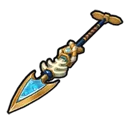

Pique com Propulsor
Lança · Tier 12 · Nível 36
Quando lançado, o propulsor é ativado para chegar ainda mais longe. Não sei como, mas é movido a água, então não prejudica o meio-ambiente!
Atributos
Ataque
690
Vida
21
Economia
Valor
2.800.000
Tempo de fabricação
19h 50min
XP do comerciante
230.000
Trabalhadores: Carpinteiro 29, Joalheiro 25, Mestre 22
Receita


Marcos do projeto
6
Tempo de fabricação -20%
14
-77 Madeira
26
Valor +25%
40
-6 Joias
60
Chance de qualidade +1